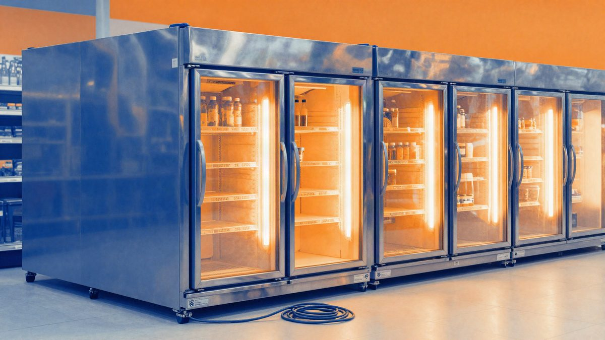

Britanija potajno zakrpala tisuće hladnjaka: druga ranjivost mogla je biti još opasnija od one u Europi

Nakon napada koji su u europskim supermarketima zagrijali hladnjake na 50 °C, Ujedinjeno Kraljevstvo je zakrpalo kontrolere hladnjaka diljem zemlje. Sigurnosni istraživači krajem su listopada u kontrolerima tvrtke RDM otkrili ranjivost koja je mogla izazvati još veću štetu, a tvrtka tvrdi da nije bilo znakova zlonamjerne aktivnosti.
Ujedinjeno Kraljevstvo je zakrpalo kontrolere hladnjaka u supermarketima, skladištima i drugim objektima kako se ne bi ponovili napadi koji su u Europi uništili zalihe hrane. BBC piše da su sigurnosni istraživači krajem listopada otkrili ranjivost koja je mogla izazvati još veću štetu od one koja je pogodila europsko kopno. Uređaji su sada zaštićeni.
U Francuskoj, Belgiji i drugim europskim zemljama napadi su podigli temperature u hladnjacima supermarketa na 50 °C. Prvi val pogodio je Francusku u listopadu, a zatim i supermarkete i banke krvi u drugim zemljama. Hladnjaci u jednoj američkoj vojnoj bazi također nisu bili sigurni. Odgovornost za napade nitko nije preuzeo. Francuska ih za sada pripisuje Iranu, što iranska vlada poriče.
Zašto Britanija nije bila pogođena
Mislilo se da je Britanija izbjegla slične napade jer koristi drugačije uređaje od onih na europskom kopnu. No problem je bio u najpopularnijim kontrolerima hladnjaka u zemlji, koje proizvodi britanska tvrtka Resource Data Management (RDM). Imali su sličan propust u autentifikaciji kao i uređaji hakirani u Europi. RDM kaže da bi za napad bio potreban poseban hardver, ali je taj hardver slobodno dostupan.
Kako je tekla operacija
Problem je prvi uočila savjetodavna tvrtka za hlađenje Omega Solutions. Zatim su se uključili National Cyber Security Centre (NCSC), ministarstvo Defra i Food Standards Agency (FSA). Kao mjeru opreza, tisućama uređaja koji upravljaju desecima tisuća hladnjaka blokiran je pristup internetu. IT osoblje supermarketa u nekim je slučajevima uređaje fizički izoliralo vađenjem mrežnih kabela.
Jedan zaposlenik supermarketa upozorio je na moguće posljedice: "S poslovne perspektive, to je potencijalno mogao biti poguban prekid poslovanja i problem u opskrbnom lancu. U našim skladištima ima hrane vrijedne milijune funti koja se mogla pokvariti da su hakeri saznali za ovaj način napada."
RDM je potvrdio da tijekom zakrpavanja nije bilo znakova zlonamjerne aktivnosti ni na jednom od njegovih kontrolera.
Izvor: Tom's Hardware